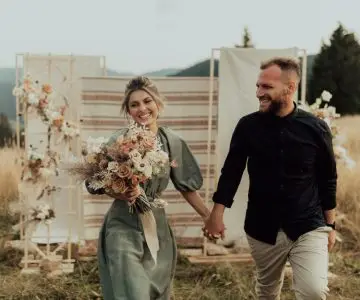
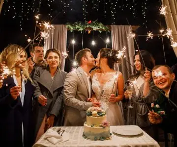

Choosing between an intimate wedding and a grand wedding is a crucial decision, and often a source of disagreement for couples.

An intimate wedding
An intimate wedding offers a warm, close-knit atmosphere, letting you share precious moments with a smaller number of guests, often family and close friends. It is often less stressful for the couple, as it is easier to organise and lets you enjoy each person in a unique, meaningful way. It will be easier to spend time with everyone who is there for you on this day of celebration. An intimate wedding also means fewer headaches and less preparation, given the smaller number of guests.
A grand wedding
By contrast, a grand wedding brings together a large number of people for a more spectacular, grandiose celebration with a festive, electric atmosphere. It also lets the couple express their style and personality through a memorable, entertaining atmosphere, with, for example, a large, beautiful dance floor, extravagant, sumptuous decorations and an extraordinary venue! On the other hand, it can be more complex to organise on your own in terms of logistics, coordination and budget.

As your wedding planner, my role is to help you make this very special day a warm, festive event full of love. Through my services, I take care of the full coordination of your wedding right up to the big day, whether the decoration of the venue, the schedule or the entertainment. I'll make this the most important and most beautiful day of your life!
Whether you're looking for an intimate or a grand wedding, don't wait any longer: get in touch by email or phone so we can talk about your wishes and create unique moments full of magic, brimming with joie de vivre and happiness.
- Alexandra Ambert
Lovely Day Event

A crucial choice
It is important to take each partner's personal wishes and preferences into account so you can find an overall vision of the wedding that pleases you both. Whether for the venue, the budget or your vision of the big day, think about what matters most to you. Talk with your partner and take each other's wishes and desires into account.
Whatever you choose, remember that what matters most at a wedding is the love and closeness you share on this big day. Share, connect and celebrate these unforgettable moments with your loved ones, your families and your friends!
And above all, listen to yourselves, talk and follow your heart!
Lovely Day Event offers several services
Wedding planning
I step in at every stage of your preparations and guide you through your choices, bringing ideas and suggestions so that your wedding looks like no one but you.
Wedding design
Creative and passionate, I am a certified Wedding Designer and I create a scenographic atmosphere that matches the theme of your wedding.
On-the-day coordination
I will be the conductor of your day, managing the suppliers, the set-up of your decor and the smooth running of this beautiful day.